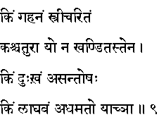
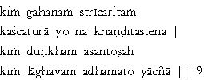

|

|
Verse 9 - Meaning:
Q: What is too deep to be known ? (kim gahanam)
A: The nature of women (or what is behind a woman's mind) (stri-caritam)
Q: Who is the clever man ? (kah caturah)
A: One who does not become the slave of the influence of females.
Q: What is misery or worry ? (kim duhkham)
A: Getting dissatisfied with everything that one comes across. (a-santosah)
Q: What is it that makes one unworthy of all ? (kim laghavam)
A: The beggarly nature that cringes for favors from even the worst of men.
|